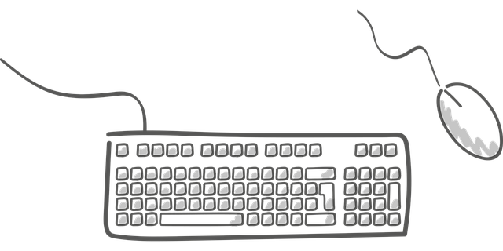

Digital Tools and Skills
Chamil Rathnayake
Welcome to my page

Activity 1: Creating Juxtaposed Images
Activity 2: Creating Storymaps
Activity 3: Embedding Sounds Within Text
listen
Activity 4: Creating Storylines